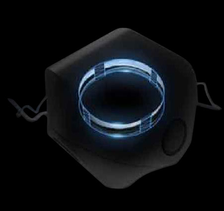

Sharing the Panoramic video/image
Built-in Stitching
Based on the built-in FPGA, S1 supports the real time stitching without the support from the PC/laptop. 4K resolution panoramic video.
 Output: RTMP
Output: RTMP- live/preview: 4K VR video and image
- storage: 4K VR video, 4 original video for each lens, and ambisonic sound